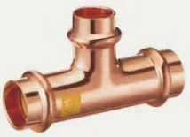
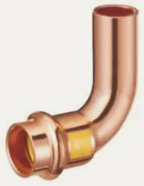
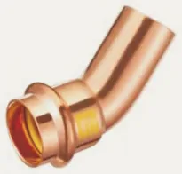
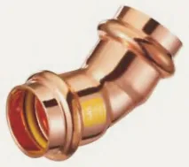
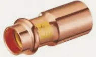
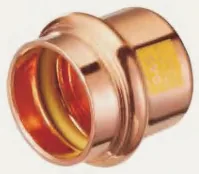
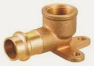
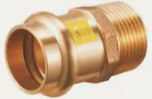

- Armatex
- Złączki zaciskane
- Trójnik równoprzelotowy GPG5130
Besco · Miedź press, profil V · gaz
Trójnik równoprzelotowy press do gazu, profil V GPG5130
Trójnik równoprzelotowy z linii miedź press, profil V · gaz: 5 rozmiarów od 15 × 15 × 15 do 35 × 35 × 35 mm. Zastosowanie: gaz ziemny, LPG. Norma EN 1254-7.
- Rozmiary
- 5
- Ciśnienie
- 5 bar
- Temperatura
- −20…70 °C

Rozmiary i numery artykułów
Źródło: katalog Besco 2026| Rozmiar | Nr artykułu | Worek | Karton | Ilość do zapytania |
|---|---|---|---|---|
| 15 × 15 × 15 | GPG5130-15 | 10 szt. | 60 szt. | |
| 18 × 18 × 18 | GPG5130-18 | 10 szt. | 50 szt. | |
| 22 × 22 × 22 | GPG5130-22 | 10 szt. | 30 szt. | |
| 28 × 28 × 28 | GPG5130-28 | 4 szt. | 20 szt. | |
| 35 × 35 × 35 | GPG5130-35 | 2 szt. | 12 szt. |
- Linia
- Miedź press, profil V · gaz
- Zastosowanie
- gaz ziemny, LPG
- Norma
- EN 1254-7
- Aprobaty
- DVGWINiG
- Nazwa w katalogu
- Equal Tee
Zapytaj o ofertę: Trójnik równoprzelotowy GPG5130.
Dodaj rozmiary do listy przyciskiem „Dodaj” albo od razu napisz do nas. Ceny hurtowe, dostępność i terminy przygotujemy w ciągu jednego dnia roboczego.
Inne produkty w linii
Szukaj w linii Miedź press V · gaz
Łuk 90° wzGPG5001 · 5 rozm. Łuk 90° wwGPG5002 · 5 rozm.
Łuk 90° wwGPG5002 · 5 rozm.
Łuk 45° wzGPG5040 · 5 rozm.
Łuk 45° wwGPG5041 · 5 rozm. Trójnik redukcyjnyGPG5130 · 12 rozm.
Trójnik redukcyjnyGPG5130 · 12 rozm. Mufa redukcyjna wwGPG5240 · 8 rozm.
Mufa redukcyjna wwGPG5240 · 8 rozm.
Redukcja wzGPG5243 · 8 rozm. MufaGPG5270 · 5 rozm.
MufaGPG5270 · 5 rozm.
ZaślepkaGPG5301 · 5 rozm. Kolano 90° z GWGPG4090 · 7 rozm.
Kolano 90° z GWGPG4090 · 7 rozm. Kolano 90° z GZGPG4092 · 6 rozm.
Kolano 90° z GZGPG4092 · 6 rozm. Trójnik z GWGPG4130 · 7 rozm.
Trójnik z GWGPG4130 · 7 rozm.
Kolano ścienne z GWGPG4471 · 3 rozm.
Złączka z GZGPG4243 · 12 rozm. Złączka z GWGPG4270 · 12 rozm.
Złączka z GWGPG4270 · 12 rozm.